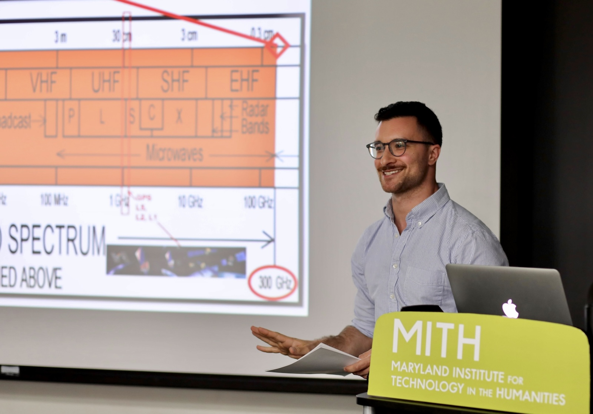

~/jeffreymoro/index.html

> whoami
→Jeffrey Moro, PhD
I’m a writer, teacher, and tinkerer based in Baltimore, Maryland. Broadly, my work explores how we use computers to represent, interpret, model, and otherwise mediate the natural world. I’m especially interested in environmental computation’s long media history: how uncommon, even so-called “obsolete” technologies from almanacs to old video games help us reflect on and better understand our present relationship with—and collective responsibilities towards—our planet.
To that end, I’m currently working on a book titled Cloud Studies: A Media Archaeology of the Atmosphere, which explores the mediation of the atmosphere as data from the Earth’s surface up to outer space. The book is structured in five chapters, each corresponding to a layer of the Earth’s atmosphere: troposphere, stratosphere, mesosphere, thermosphere/ionosphere, and exosphere. As the subtitle suggests, I take a media archaeological approach, exploring some lesser-known—even downright strange—moments in atmospheric media history, from electronic weather diaries to climate simulation games, artificial meteors to experimental radio art, to argue that we’ve come to imagine the atmosphere as a computer itself. I’ve published essays related to his project in the Journal of Environmental Media, Media Fields, and Amodern, among other venues.
Other research interests of mine include media theory and history, electronic literature, vintage and obsolete computers, software (especially video game) preservation, textual history, the materiality of radio, technologies of the occult, nature writing, the cultural history of the internet, and barbell weightlifting.
> ls -affiliations
I currently hold the position of Assistant Clinical Professor of Digital Humanities and Digital Studies with the Maryland Institute for Technology in the Humanities (MITH) and African American Digital and Experimental Humanities (AADHum) at the University of Maryland, College Park, where I’m also affiliated with the Artificial Intelligence Interdisciplinary Institute at Maryland (AIM). Among my various programmatic duties at MITH, I steward its retrocomputing collections, including the Bill Bly and Deena Larsen Collections of Electronic Literature, and run RetroComp, a research lab dedicated to the preservation and revitalization of old computers. I teach both undergraduate and graduate classes in the digital humanities, with a particular emphasis on hands-on work with MITH’s collections.
I received my PhD in English with a certificate in Digital Studies from the University of Maryland, College Park. I’m a co-founder of the Immersive Realities Labs for the Humanities (irLh), a multidisciplinary research lab that integrates emerging digital technologies with humanistic critique. Past lives include work as a site manager for Romantic Circles, a born-digital journal of Romantic literary studies, and as a post-baccalaureate resident with Five College Digital Humanities.
> ls recent-posts/
I blog, erratically. If you’d like to read my posts in your inbox, I have a newsletter that mirrors my posts here. I also have an RSS feed.
- 2026-05-31: How Much Computer
- 2026-05-01: Silence
- 2026-03-21: Sick Day
- 2026-01-31: Keys, Ranked
- 2026-01-18: Hōjōki
You can reach me at jm [at] jeffreymoro [dot] com.